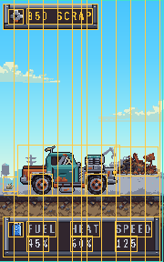
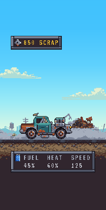
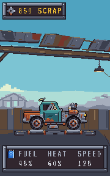
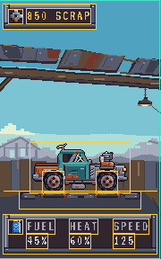
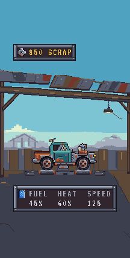
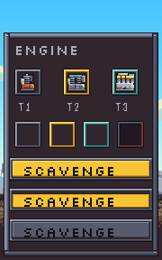
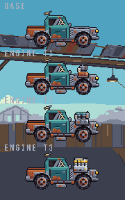
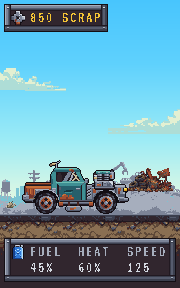
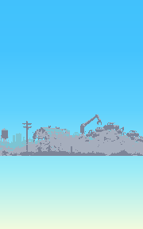
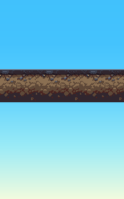

READY FOR OWNER REVIEW • 2026-10-08
Every image below is a capture of the real Phaser WebGL canvas through Vite, using production URLs. Critical composition is 180×288 art pixels; maximum canvas is 216×427. UI values are static proof labels. Mail is omitted because no approved Mail asset exists.
Judge Rustbucket prominence, separate roller contact, canopy/lamp, background relationship and Fuel / Heat / Speed readability.



Judge car silhouette, road contact, depth/layer order, Scrap Pile landmark, tinted puff and repetition. Clouds remain optional.





Authored wheel / puff frame:
Adjacent source copies meet inside the viewport. The runtime report also checks phases around wrap boundaries. Each lane contains full-resolution copies, never stretched textures.


Runtime checks pass for keys/fonts/frames, nearest filtering, integer transforms, safe bounds, tile placement, resize, exact 3× pixel replication and unchanged safe composition. Source files and accepted pixels remain unchanged. Owner integrated visual acceptance, final Golden approval and palette lock remain open; no ART-04 work is started.